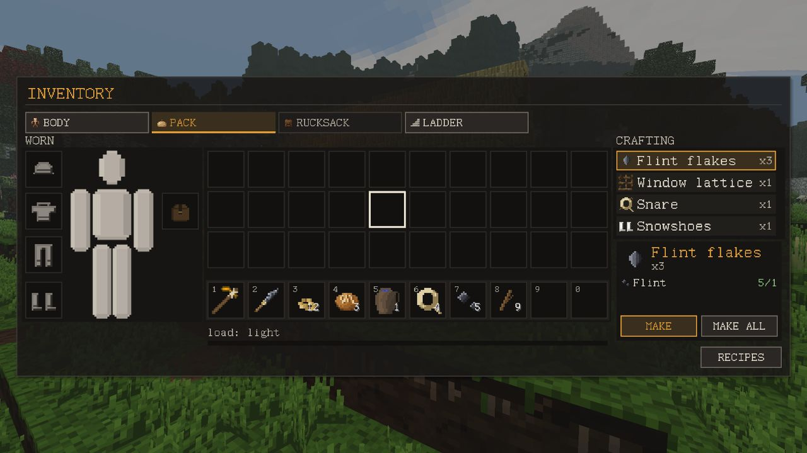
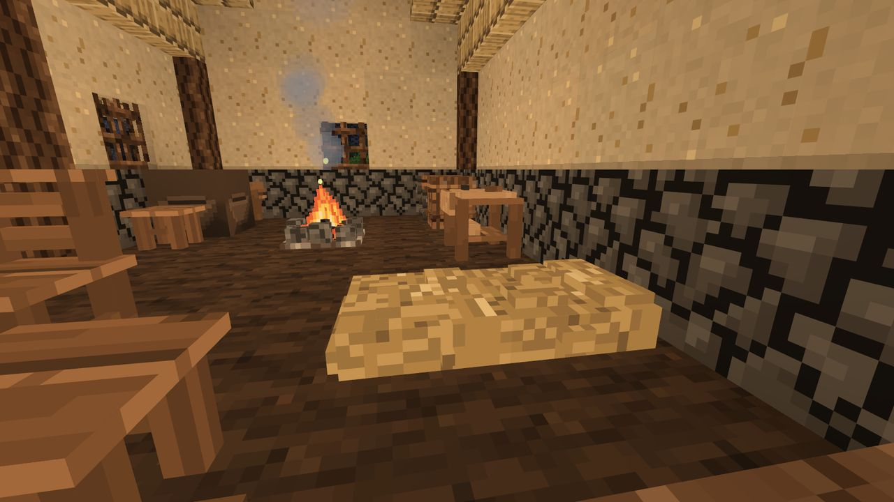
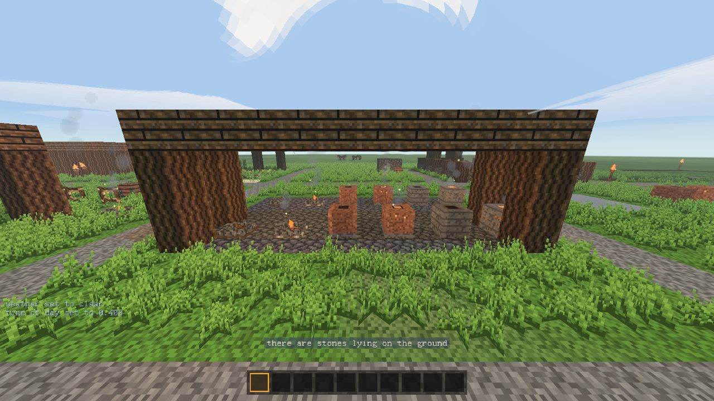

Crafting and stations
A recipe is a set of ingredients, not a pattern on a grid. Nothing has to be arranged.
Making things from the pack
Open the pack with I. On the PACK tab the CRAFTING column on the right lists what you can make from what you carry. A row chooses, the card makes: click a row and the card under the list shows that recipe, what it needs and how much of each you have (5/1, green when there is enough, red when not). Then press MAKE to make it once or MAKE ALL to make as many as you can. The buttons stay dead while something is missing.

The recipe book
Press B, or the RECIPES button in the lower right corner of the pack. The book holds the recipes you know, not only those you can make right now.
- A recipe becomes known when every one of its ingredients has been in your pack at some point. What you make goes into your pack too, so crafting teaches itself.
- If exactly one ingredient is still missing, the recipe is already in the book, with that ingredient drawn as a ?. Hold copper and the book shows that copper and one more thing make bronze, without saying what. That is what you go to the hills for. Search does not reveal it.
- The left side lists known recipes first, then those with a ?. The right side shows the chosen one: ingredients with what you have (
3/4, green when enough), where it is made (hands, fire, kiln, bloomery or a workshop), how hot the fire must be (as a smith's colour), what is missing, what comes back (crucible, mould) and whether it can fail. - The buttons at the top filter by place (ALL, HANDS, WORKSHOP...). On a keyboard just type to search by name.
- The last line, GOES INTO, is the book read backwards: what this item is used for. There is no recipe called "flint", but knives, spears and fire strikers come out of it.
What you know is kept in your profile on the server and survives death. Tab switches between the book and the map (if you carry one).
Where things are made
| Place | What it is | Made from |
|---|---|---|
| Hands | anywhere, from the pack | — |
| Fire | any lit campfire, firepit, kiln or bloomery: cooking, charcoal, smelting copper and tin | firepit: 3 sticks + 1 log dropped and struck; campfire: 3 cobblestone + 4 sticks |
| Kiln | the clay furnace: firing pottery and bricks, bronze, casting and forging metal, steel | 8 clay + 4 cobblestone |
| Bloomery | iron bloom and iron ingots | 16 bricks + 4 mortar + 8 cobblestone |
| Workbench | furniture, frames | 1 log + 4 sticks + 4 pegs |
| Mason's block | stone hammer, quern flour, whetstones | 4 cobblestone + 1 log |
| Potter's wheel | crucibles, jugs and bowls with less clay | 3 planks + 2 pegs + 1 cobblestone |
| Leather bench | rucksack, map, saddle and saddlebags for less leather | 2 planks + 4 sticks + 1 leather + 1 cord |
| Butcher's table next update | cutting up carcasses carried whole: a portion more from every cut; a bronze cleaver can stand in it (Animals) | 2 logs + 2 planks + 6 pegs, by hand |
next update The bronze cleaver for the butcher's table is forged at the kiln: 2 bronze ingots + 1 worked stick + 2 sinew.
The four workshops make things at once from your pack, as long as you stand within reach. The three fires are hearths: you load them and the batch takes time.

Hearths and heat
Right-click a hearth (without flint in your hand) to open it: four input slots top left, a fuel slot under them, two output slots on the right and an ash slot bottom right. A coloured bar shows the heat, with a mark for what the batch needs, and an arrow shows the progress. It runs by itself; you can leave.
A fire's temperature decides what it can do, and the temperature comes from the fuel. The kiln burns 150° hotter than a campfire on the same fuel, the bloomery 250° hotter.
| Fuel | Heat on a campfire |
|---|---|
| Charcoal | 1350, white |
| Sticks, fat | 800, bright red |
| Oak log, planks | 728, dark red |
| Birch and spruce wood | 652, dark red |
| Peat | 600, dark red |
| Batch | Heat it needs | Time |
|---|---|---|
| Cooking, bread | 200 | 8 s at a campfire |
| Charcoal (3 logs → 1) | 400 | 75 s |
| Firing pottery and bricks | 700 | 110 s |
| Copper ingot, bronze, copper castings | 1080 (orange) | 75 s from ore, 40 s melting |
| Tin ingot | 1100 (yellow) | 75 s |
| Iron bloom | 1200 | 5 min |
| Iron ingot from bloom | about 1230 | 2 min |
| Steel | 950 | 5 min |
The rule that follows: nothing but charcoal gets any hearth hot enough for copper or tin. Wood is for supper and pottery; charcoal is for metal. When a batch stalls, the line under the fire says the heat is too low and which colour it needs.
- Rain cools a fire in the open by 300° in a storm and puts it out; a block straight over the hearth protects it.
- Supper burns. Finished food left in the output slots at orange heat or above turns to ash.
- Fresh logs are wet and burn cooler and shorter. Pottery and metal cannot be done on them at all. Stack logs into a woodpile (Shift + right-click with a log) and they dry in three days.
- Ore smelting leaves slag next to the metal. If the output slots are full, the batch does not start.

The pit kiln
Pots can be fired with no kiln and no charcoal, in a hole in the ground. It is slow, but needs only earth, fibre and wood, so the first crucible can be fired on the first evening by the river.
- Dig a hole one block deep. The floor and all four sides must be earth, sand, gravel, stone or brick. Wood burns and does not count.
- Put the raw pieces in: right-click the floor with a raw crucible, mould, jug or brick. Up to four.
- Lay 8 fibre on them, one right-click at a time.
- Lay 8 logs on top.
- Light it with flint.
- It burns for 15 minutes of real time (not game hours). Then take the fired pieces out with an empty hand.
Rain over an open pit puts it out within twenty seconds. A roof helps only if it is at least two blocks above the pit; a block lying right on the logs smothers it. Everything is fired only at the end, so a pit that goes out early fires nothing.
The charcoal pit
Charcoal at a campfire is 3 logs for 1 charcoal. A charcoal pit gives more for the wood but takes 15 minutes:
- Shift + right-click the ground with a log to start a log pile; right-click the pile with more logs, up to eight.
- Cover it on every side with earth, sand, gravel or stone (a dug hole makes this easy).
- Light the last open face with flint and close it within 30 seconds.
- After 15 minutes the pile is a charcoal heap: eight logs give four charcoal. Break it to collect.
Leave a face open longer than 30 seconds and the pile burns to ash.
Quality, wear and sharpening
- Quality is set once, when you make a thing. It comes from your state (tiredness, comfort, health, hunger), whether you stood at the right workshop, the tool in hand, and on the anvil and potter's wheel how well you hit the mark. The rested maker works evenly; the exhausted one gets anything. Under the name it says poor work, plain work, good work or fine work. Two items of different quality do not stack.
- Tools wear out. A swing counts only when it breaks a block or hits an animal. A bar under the icon goes green, yellow, red; when it runs out the tool is gone. A flint knife lasts about 70 swings, a copper axe 180, bronze 320, iron 550.
- Edges go dull in steps (sharp, slightly dull, dull, blunt), and a blunt tool works at half speed. A whetstone (1 sandstone → 2) sharpens the dullest tool of a kind; the stone comes back. A flint knife cannot be sharpened: flint chips, it does not dull.
The anvil (5 bronze ingots + 1 log, at the kiln) and the potter's wheel have a small timing game: strike on the mark for a better piece.